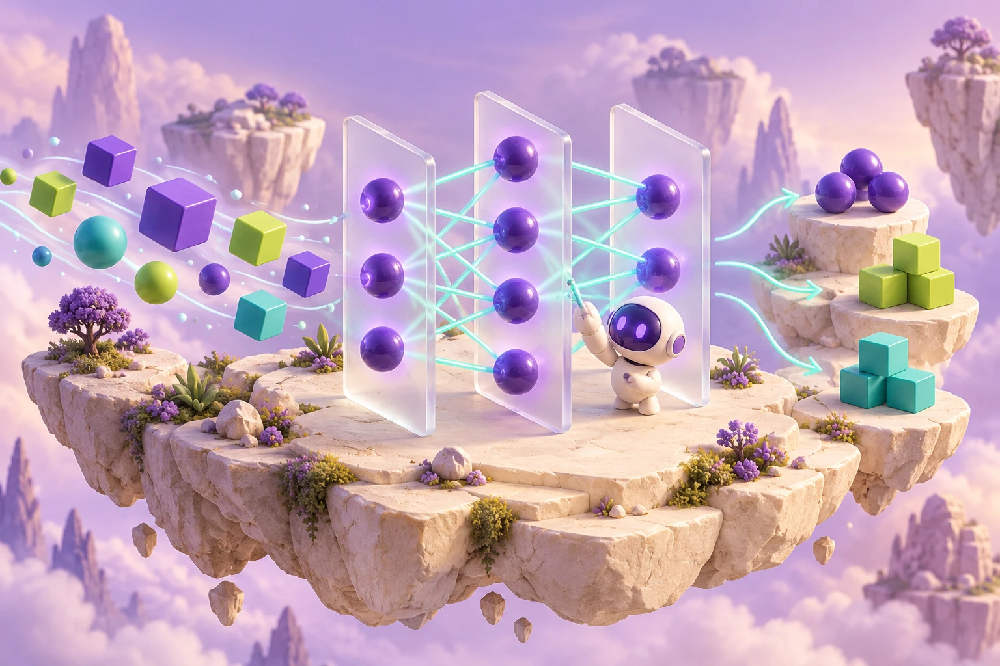

От первого Python-кода до моделей для изображений, текстов и звука. У каждого курса — своя программа, требования к подготовке и один понятный итоговый проект.
Научись читать код и готовить данные: Python, NumPy, Pandas, графики и работа в Jupyter или Colab.
Что изучим
Python: условия, циклы, функции и основы ООП
Jupyter, Colab, Linux и импорт / экспорт файлов
NumPy, массивы, матрицы и функции
Pandas: таблицы, пропуски, типы и преобразования
Matplotlib и Seaborn: графики и проверка данных
План по этапам
Неделя 1 — Python, переменные, условия и циклы; запуск ноутбука.
Неделя 2 — функции, основы ООП и команды Linux в Colab.
Неделя 3 — NumPy, матрицы и операции с массивами.
Неделя 4 — загрузка файлов, Pandas, очистка и разбор форматов.
Неделя 5 — Matplotlib, Seaborn и объяснение графиков.
Неделя 6 — собственный ноутбук подготовки данных и инструкция запуска.
Подготовка: Можно начать без опыта.
21 короткий CPU-урок: код, таблицы, графики, файлы и основы Python. В каждом — три шага и разбор с героями. Оригинальные большие задания доступны отдельно в архиве.
Короткие уроки
В каждом ноутбуке — три шага с кодом, проверками и разбором от Миры, Данила и Пикса. Данные небольшие, GPU не нужен. Объём короткого упражнения указан отдельно от большого исходного эксперимента.
Вычислить матричную формулу и получить вектор нужного размера.
Разбираем формы, оператор @ и поиск минимума на сетке; полный архив также содержит обратные матрицы и численные экстремумы.Исходный эксперимент в архиве ↗
Получить прозрачный отчёт: сколько строк прочитано, какие неполные и как рассчитана сумма.
Короткая практика качества данных и времени в pandas; архив дополнительно разбирает продажи домов, страны и объединения.Исходный эксперимент в архиве ↗
Распознать встроенные изображения цифр и проверить структуру своего CSV.
Лёгкая модель ближайших соседей для sklearn digits 8×8. Это вводный маршрут вместо Keras CNN на Kaggle MNIST 28×28; полный эксперимент остаётся в архиве.Исходный эксперимент в архиве ↗
Сделать навигацию по сценам и проверить её границы.
Основа интерактивной истории вместо виджетов с кодом, placeholder-картинками и несуществующим аудио. Управление — вызов функции в ячейке.Исходный эксперимент в архиве ↗
Разобрать суммы и площади, сохранив неизвестные значения.
Два небольших парсера вместо большой обработки резюме и объявлений из Google Drive. Остальные поля и полный эксперимент доступны в архиве.Исходный эксперимент в архиве ↗
Сравнить одинаковые сводные показатели с разными формами распределения.
Идея визуальной проверки по мотивам Seaborn и квартета Анскомба из архива. Здесь собственные синтетические данные и Matplotlib, не оригинальный квартет и не полный обзор Seaborn.Исходный эксперимент в архиве ↗
Получить ответ сервиса и проверить ошибки запроса вместе с единым форматом пикселей.
Локальное упражнение WSGI с классификацией двух синтетических шаблонов по расстоянию. MNIST, TensorFlow, Streamlit и развёртывание Heroku остаются в архиве; серверный порт не открывается.Исходный эксперимент в архиве ↗

02 · ОсноваИллюстрация курса
6 недель · 6 встреч · 4 материала
Нейросети: первая модель
Обучи первую сеть и пойми, где она ошибается.
Для старта: Основы Python, функции и массивы.
Что получится
Один воспроизводимый эксперимент с MLP: код, независимая тестовая выборка, сравнение с простым решением и разбор ошибок.
Стартуем с урока «Нейросеть решает XOR»: маленькая NumPy-сеть и три шага. Ещё три коротких урока разбирают классификацию и проверку; исходные большие сети сохранены в архиве.
В каждом ноутбуке — три шага с кодом, проверками и разбором от Миры, Данила и Пикса. Данные небольшие, GPU не нужен. Объём короткого упражнения указан отдельно от большого исходного эксперимента.
Три коротких CPU-урока: очистка вымышленных таблиц, распределения и точная формулировка вероятностных событий. Исходные исследования HH / ЦИАН сохранены в архиве. House Prices на Kaggle — отдельный согласованный проект; правила и доступность данных проверяем перед стартом.
Короткие уроки
В каждом ноутбуке — три шага с кодом, проверками и разбором от Миры, Данила и Пикса. Данные небольшие, GPU не нужен. Объём короткого упражнения указан отдельно от большого исходного эксперимента.
Правильно связать стандартное отклонение одного дня и суммы за неделю.
Нормальная модель и суммирование независимых дней; реальная задача о количестве дефектов требует отдельной дискретной модели.Исходный эксперимент в архиве ↗
Выбери задачу с картинками: классификация, поиск объектов или сегментация. Разбери CNN и применение готовых моделей.
Что изучим
Conv2D, фильтры, pooling и устройство CNN
MNIST, CIFAR-10 / 100, жесты и марки автомобилей
Применение готового детектора SSDLite MobileNetV2
Сегментация изображений и оценка масок
Перенос обучения: замороженная основа и новый выходной слой
Дообучение части готовой сети с небольшой скоростью обучения; сравнение на отложенных данных
План по этапам
Недели 1–2 — изображения, разметка, разбиение и небольшая CNN.
Недели 3–4 — свёртки, переобучение и классификация на выбранном наборе.
Недели 5–6 — для переноса обучения: заморозить основу, обучить выходной слой, затем сравнить дообучение части сети; детекция и сегментация — альтернативные задачи.
Недели 7–8 — один выбранный проект, метрики, ошибки и отчёт; для Digit Recognizer на Kaggle — подготовка файла прогнозов по правилам задачи.
18 коротких CPU-уроков разбирают отдельные операции и небольшие модели: фильтры, маски, рамки и проверку данных. Медицинские темы используют только синтетические учебные примеры, без диагностики. Полные CNN, старые датасеты и исследования доступны отдельно в архиве.
В каждом ноутбуке — три шага с кодом, проверками и разбором от Миры, Данила и Пикса. Данные небольшие, GPU не нужен. Объём короткого упражнения указан отдельно от большого исходного эксперимента.
Входной контракт на NumPy по мотивам эксперимента EfficientNetB7. Правила реальной EfficientNet здесь не подменяются этим учебным контрактом. Медицинский эксперимент сохранён в архиве, но здесь не воспроизводится.Исходный эксперимент в архиве ↗
Увидеть вычисление x + F(x) и случай нулевой поправки.
Один остаточный блок на NumPy, а не полная ResNet152. Медицинский эксперимент сохранён в архиве, но здесь не воспроизводится.Исходный эксперимент в архиве ↗
Обучить маленькую выходную часть и доказать, что признаки не изменились.
Миниатюрная иллюстрация обучения выходной части. Признаки здесь ручные, не предобученная VGG19. Медицинский эксперимент сохранён в архиве, но здесь не воспроизводится.Исходный эксперимент в архиве ↗
Один компонент свёрточных сетей VGG16: max pooling. Полная VGG16 не реализована. Медицинский эксперимент сохранён в архиве, но здесь не воспроизводится.Исходный эксперимент в архиве ↗
Объединить признаки разных масштабов с проверкой формы.
Две простые ветви и остаточная сумма на NumPy по мотивам InceptionResNetV2; не полная архитектура. Медицинский эксперимент сохранён в архиве, но здесь не воспроизводится.Исходный эксперимент в архиве ↗
Проследить формы внутри маленького линейного bottleneck.
Демонстрация расширения каналов, ReLU6 и линейной проекции; пространственная свёртка и полная MobileNetV2 не реализованы. Медицинский эксперимент сохранён в архиве, но здесь не воспроизводится.Исходный эксперимент в архиве ↗
Выполнить depthwise + pointwise вычисление и проверить имя артефакта.
Один небольшой компонент MobileNet на NumPy. Полная MobileNet и веса из ImageNet не используются. Медицинский эксперимент сохранён в архиве, но здесь не воспроизводится.Исходный эксперимент в архиве ↗
Выбрать фильтр по проверочной части и оценить его на новой.
Миниатюрный перебор вариантов обработки по мотивам NASNetLarge. Это не нейронный поиск архитектуры NASNet. Медицинский эксперимент сохранён в архиве, но здесь не воспроизводится.Исходный эксперимент в архиве ↗
Выбрать порог на одном наборе и посчитать ошибки на другом.
Оценка бинарного классификатора по синтетическим оценкам. VGG19 здесь не загружается; оценки не получены нейросетью. Медицинский эксперимент сохранён в архиве, но здесь не воспроизводится.Исходный эксперимент в архиве ↗
Отличить объединение каналов от сложения массивов.
Миниатюрный dense-блок на NumPy с ручными фильтрами, не полная DenseNet201. Медицинский эксперимент сохранён в архиве, но здесь не воспроизводится.Исходный эксперимент в архиве ↗
03 · СпециализацияИллюстрация курса
8 недель · 8 встреч · 10 материалов
Нейросети для текстов · NLP
Научи модель различать настроение текстов.
Для старта: Python, массивы и основы классификации.
Что получится
Классификатор текстов с подготовкой данных, сравнением двух подходов и анализом ошибочных ответов.
10 коротких CPU-уроков по словам, признакам и классификации текста. Большие исходные модели доступны отдельно в архиве; три шага вводного упражнения не обещают обучения полноценной LSTM или языковой модели.
В каждом ноутбуке — три шага с кодом, проверками и разбором от Миры, Данила и Пикса. Данные небольшие, GPU не нужен. Объём короткого упражнения указан отдельно от большого исходного эксперимента.
Найти сочетание «очень хорошо» с помощью числового фильтра и max pooling.
Вычисляем одну настоящую операцию Conv1D на NumPy с заданным фильтром. Архив содержит обучение CNN на IMDb; этот урок не измеряет её точность.Исходный эксперимент в архиве ↗
Пройти простой путь от двух колонок CSV до предсказания настроения.
Вводный классификатор слов вместо тяжёлой LSTM на Yelp. Формат классов и подготовка текста остаются темой урока; полный LSTM — в архиве.Исходный эксперимент в архиве ↗
Сохранить лучшую версию небольшого классификатора и проверить её один раз на тесте.
Учим принцип checkpoint на лёгкой логистической модели SGD. Это замена учебного масштаба, а не реализация архивной LSTM для Yelp.Исходный эксперимент в архиве ↗
03 · СпециализацияИллюстрация курса
6 недель · 6 встреч · 2 материала
Нейросети для звука
Узнай птицу по её песне.
Для старта: Python, массивы и основы классификации.
Что получится
Один эксперимент классификации звука: подготовка записей, извлечение признаков и разбор ошибок модели.
Два коротких CPU-урока на искусственных сигналах: спектр и классификация без смешивания записей. Исследование настоящего пения птиц сохранено в архиве и требует отдельной подготовки данных.
В каждом ноутбуке — три шага с кодом, проверками и разбором от Миры, Данила и Пикса. Данные небольшие, GPU не нужен. Объём короткого упражнения указан отдельно от большого исходного эксперимента.
Пять коротких CPU-уроков на небольших учебных рядах. Окна, прогноз и проверка по времени видны в коде. Исходные Stock и Trafic сохранены в архиве; курс не даёт торговых рекомендаций.
Короткие уроки
В каждом ноутбуке — три шага с кодом, проверками и разбором от Миры, Данила и Пикса. Данные небольшие, GPU не нужен. Объём короткого упражнения указан отдельно от большого исходного эксперимента.
Получить прогноз следующего значения и измерить его ошибку.
Введение в окна временного ряда. Архив содержит большие Conv/LSTM-эксперименты с биржевыми данными; здесь линейная модель на выдуманном сигнале.Исходный эксперимент в архиве ↗
Посчитать разные метрики для четырёх маленьких учебных случаев.
Мини-лаборатория по мотивам TerraAI-интенсива: трафик, направление ряда, голосовые команды, подбор решения. Полные модели и симулятор остаются в архиве.Исходный эксперимент в архиве ↗
Сравни настройки модели: размер слоёв, скорость обучения и варианты архитектуры. Разбери Keras Tuner и генетический поиск.
Что изучим
Гиперпараметры и пространство поиска
Keras Tuner и Fashion MNIST
Ручной, автоматический и генетический поиск
Бюджет вычислений, seed и журнал экспериментов
Выбор по validation и финальная проверка на test
План по этапам
Неделя 1 — исходная модель, метрика и бюджет экспериментов.
Неделя 2 — ручные варианты и автоматический поиск Keras Tuner.
Неделя 3 — принципы генетического поиска и сравнение конфигураций.
Неделя 4 — итоговая проверка, таблица результатов и отчёт; если исходный проект выбран на Kaggle — подготовка файла прогнозов без подбора по финальным ответам.
Три коротких CPU-урока: ограниченный поиск, сравнение конфигураций и генетический алгоритм. Исходные Keras Tuner и Genetica доступны в архиве. Лучший проверочный результат не гарантирует улучшения на новых данных.
В каждом ноутбуке — три шага с кодом, проверками и разбором от Миры, Данила и Пикса. Данные небольшие, GPU не нужен. Объём короткого упражнения указан отдельно от большого исходного эксперимента.
Провести несколько поколений поиска, сохраняя лучших кандидатов и отдельный финальный тест.
Учебный генетический поиск настроек линейной авторегрессии для прогноза на один шаг вперёд. Для каждой точки предыдущие фактические наблюдения уже известны. Это не нейросетевая архитектура исходного большого поиска CNN.Исходный эксперимент в архиве ↗
Выбрать размеры двух скрытых слоёв, не связывая их случайно одним именем.
Небольшой перебор двухслойных MLP в scikit-learn объясняет подбор гиперпараметров. Архив содержит более тяжёлый Keras Tuner для Fashion-MNIST.Исходный эксперимент в архиве ↗
От учебного эксперимента к первой отправке
Обучение, дообучение и Kaggle
Выбери, что хочешь попробовать. Это варианты практики в существующих курсах: подготовку, один итоговый проект и объём участия согласуем с наставником.
Обучить свою модель
ДанныеОбучениеСвои веса
Соберём небольшую MLP, посмотрим, как меняются веса, и проверим результат на новых примерах.
Результат: ноутбук с обучением, метрикой и разбором ошибок.
Прочитаем задачу, метрику, формат ответа и правила соревнования; проверим допуск, внешние данные, готовые веса и применение ИИ.
Отделим проверочную выборку и запустим простую модель — исходный результат для сравнения.
Изменим один подход, сравним на проверочной части, разберём ошибки и сохраним код. Дообучение выбираем там, где оно подходит задаче и разрешено правилами.
Проверим submission-файл. Ты принимаешь правила и отправляешь решение из своего аккаунта; после приёма сохраним результат и оформим кейс.
Getting Started — учебные соревнования для знакомства с платформой. Условия и доступность проверяем перед стартом; место и призы не входят в обещанный результат. Подход к дообучению: официальный пример TensorFlow ↗.
Все материалы на месте
66 коротких уроков в восьми курсах
Все 24 темы прежней подборки и остальные 42 ноутбука сохранили исходные пути. Теперь каждый файл открывается с коротким маршрутом: цель, три шага, проверка и маленький самостоятельный опыт.
Стартовая NumPy-сеть и 65 тематических упражнений выполняют небольшие задачи на CPU. Полные CNN, большие датасеты и прежние исследования доступны отдельно по ссылке на неизменяемый архив. Их исторические результаты не выдаются за результат короткого урока.